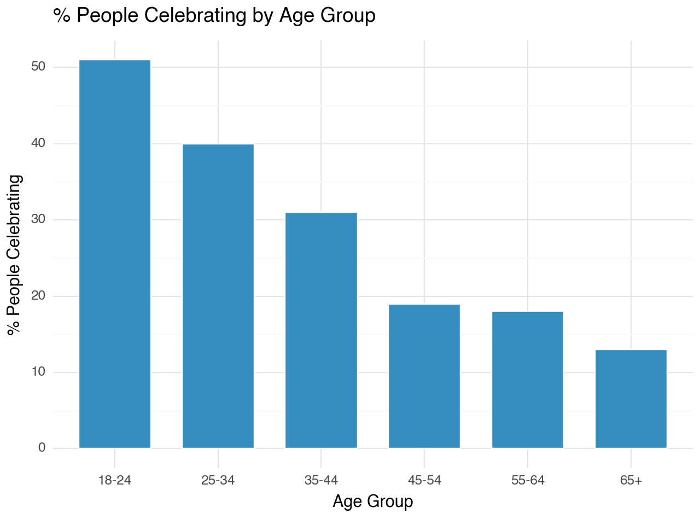
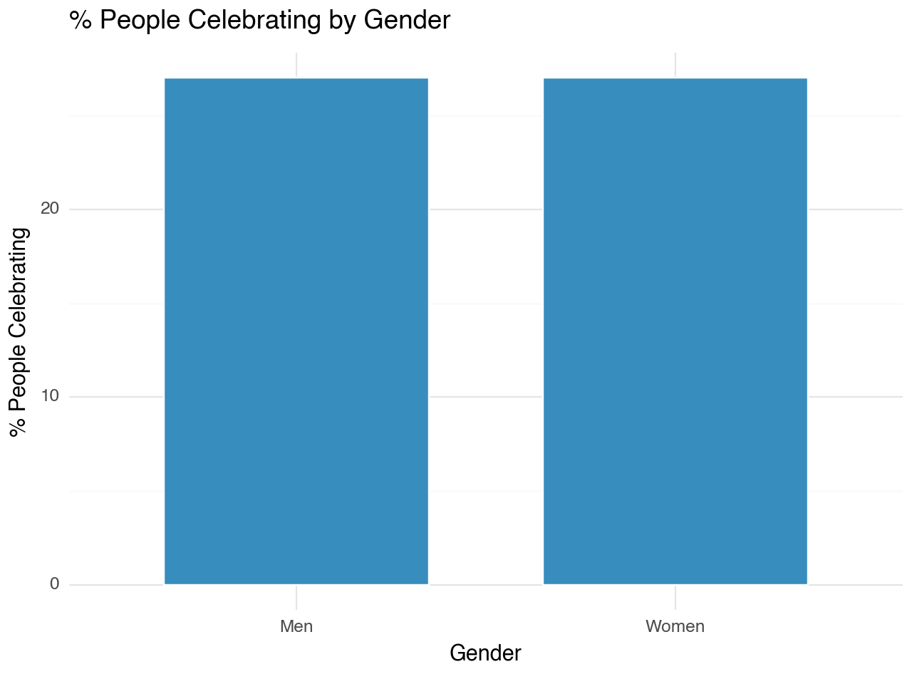
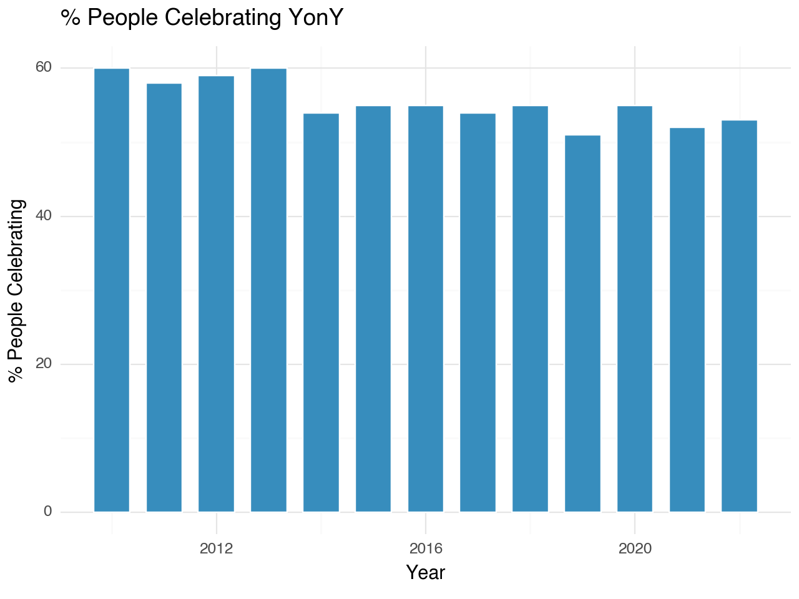
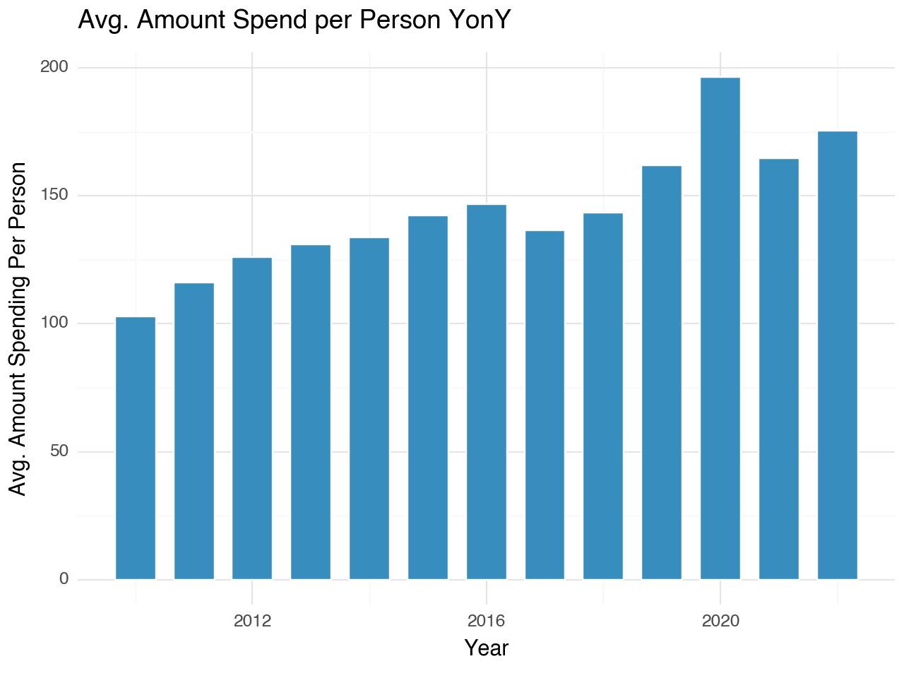
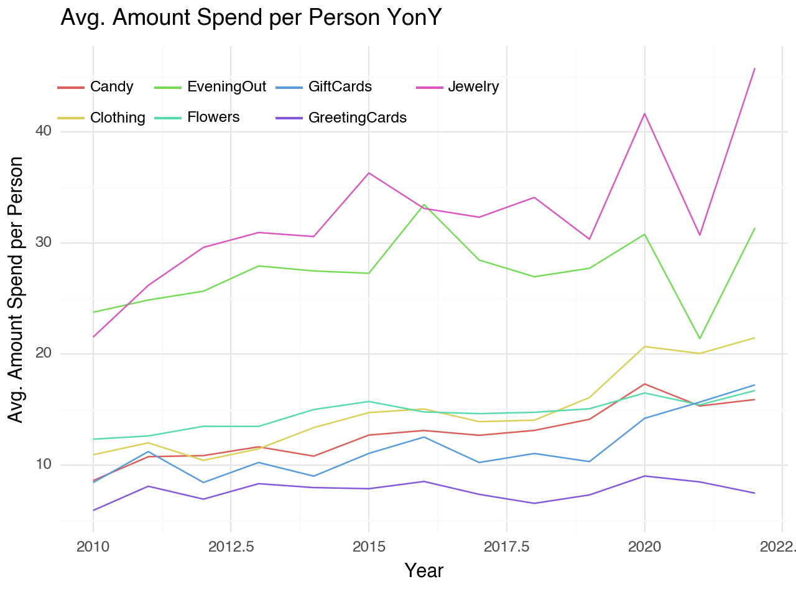
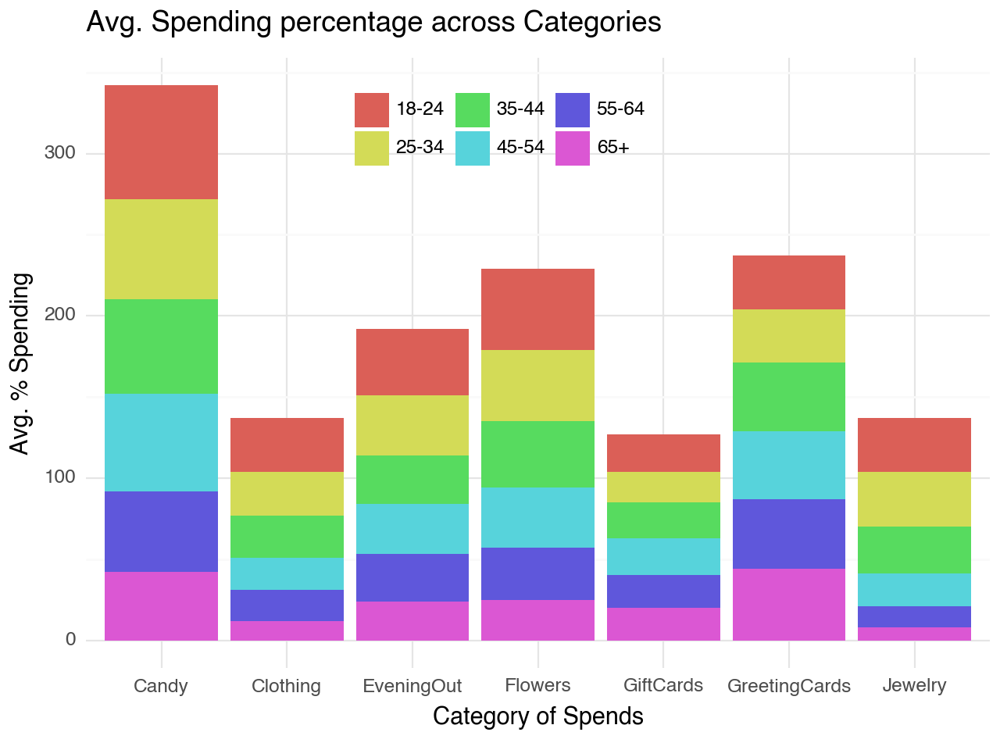
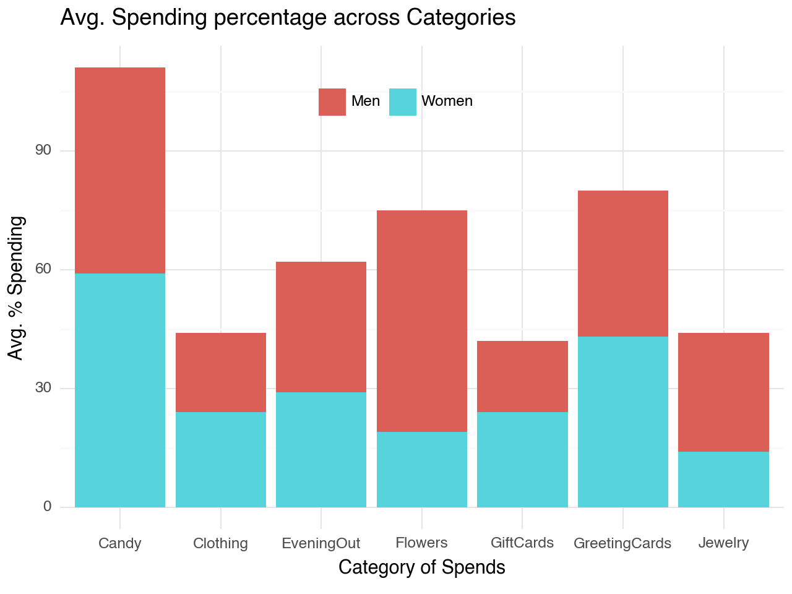

import pandas as pd
from dfply import *
from plotnine import *
import ssl0. Loading Libraries
1. Data Loading
## adding below ssl line as it is giving ssl error locally in my machine
ssl._create_default_https_context = ssl._create_unverified_context
historical_spending = pd.read_csv('https://raw.githubusercontent.com/rfordatascience/tidytuesday/master/data/2024/2024-02-13/historical_spending.csv')
gifts_age = pd.read_csv('https://raw.githubusercontent.com/rfordatascience/tidytuesday/master/data/2024/2024-02-13/gifts_age.csv')
gifts_gender = pd.read_csv('https://raw.githubusercontent.com/rfordatascience/tidytuesday/master/data/2024/2024-02-13/gifts_gender.csv')2. Plotting
2.1. Historical Spending Pattern
Spending Patterns Plot Code
plot1 = (gifts_age >>
ggplot(aes(x='Age',y='SpendingCelebrating')) +
geom_col(fill='#378DBD', color='white', width=0.7) +
theme_minimal() +
labs(
x = 'Age Group',
y = '% People Celebrating',
title = '% People Celebrating by Age Group'
)
)
print(plot1)
plot2 = (gifts_gender >>
ggplot(aes(x='Gender',y='SpendingCelebrating')) +
geom_col(fill='#378DBD', color='white', width=0.7) +
theme_minimal() +
labs(
x = 'Gender',
y = '% People Celebrating',
title = '% People Celebrating by Gender'
)
)
print(plot2)
plot3 = (historical_spending >>
ggplot(aes(x='Year', y='PercentCelebrating')) +
geom_col(fill='#378DBD', color='white', width=0.7) +
theme_minimal() +
labs(
x = "Year",
y = "% People Celebrating",
title = '% People Celebrating YonY'
)
)
print(plot3)
plot4 = (historical_spending >>
ggplot(aes(x='Year', y='PerPerson')) +
geom_col(fill='#378DBD', color='white', width=0.7) +
theme_minimal() +
labs(
x = "Year",
y = "Avg. Amount Spending Per Person",
title = 'Avg. Amount Spend per Person YonY'
))
print(plot4)



Findings:
- Spending percentage decreases as people age, which is quite intuitive. Although there is a decrease by 10 basis points as the age group increases, later, the decrease rate reduces, conveying that a significant number of happy couples stick to the tradition to keep their love life in the limelight.
- The percentage of people’s Valentine’s spending hasn’t reduced; instead, the spending has almost doubled over the years. Partly, this increase can be attributed to inflation, but overall, the spending has increased.
2.2. Historical Spending Pattern by Category
Spending Patterns by Category Plot Code
(
historical_spending >>
gather("category", "value",
["Candy", "Flowers", "Jewelry", "GreetingCards", "EveningOut", "Clothing", "GiftCards"]
) >>
ggplot(aes(x='Year', y='value', color='category')) +
geom_line() +
theme_minimal() +
labs(
x='Year',
y='Avg. Amount Spend per Person',
title='Avg. Amount Spend per Person YonY'
) +
guides(color=guide_legend(title="")) + # Use an empty string to remove the legend title
theme(legend_position=(0.35, 0.85))
)
Findings:
- Spending on Jewelry and Clothing has increased over the years.
2.3. Spending Pattern by Category
Spending Patterns by Category Plot Code
(
gifts_age >>
gather("category", "value",
["Candy", "Flowers", "Jewelry", "GreetingCards", "EveningOut", "Clothing", "GiftCards"]
) >>
ggplot(aes(x='category', y='value', fill='Age')) +
geom_col() +
theme_minimal() +
labs(
x='Category of Spends',
y='Avg. % Spending',
title='Avg. Spending percentage across Categories'
) +
guides(fill=guide_legend(title="")) + # Use an empty string to remove the legend title
theme(legend_position=(0.5, 0.85))
)
Findings:
- More people spend on candies, suggesting a desire to sweeten their partner’s experience.
- Gifting flowers and evening outings are notably common across younger age groups in comparison.
- Gifting jewelry, although less frequent, appears to be more common among younger age groups, implying a tendency to impress partners with costly gifts.
- In contrast, older generations celebrating Valentine’s Day seem to realize that words and moments are more meaningful than expensive items, reflected in the higher incidence of gifting greeting cards.
2.4. Spending Pattern by Gender
Spending Patterns by Gender Plot Code
(
gifts_gender >>
gather("category", "value",
["Candy", "Flowers", "Jewelry", "GreetingCards", "EveningOut", "Clothing", "GiftCards"]
) >>
ggplot(aes(x='category', y='value', fill='Gender')) +
geom_col() +
theme_minimal() +
labs(
x='Category of Spends',
y='Avg. % Spending',
title='Avg. Spending percentage across Categories'
) +
guides(fill=guide_legend(title="")) + # Use an empty string to remove the legend title
theme(legend_position=(0.5, 0.85))
)
Findings:
- Men tend to predominantly choose flowers and jewelry as their gift categories.
- In contrast, women’s dominant categories are gift cards and greeting cards, and the margin between these two categories is noticeable.
- This sheds light on the differing expectations that men and women may have for their partners.